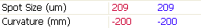
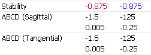
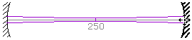
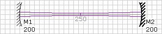

LaserCanvas 5 > Tutorials > Simple Resonator >
At this point, let’s examine some relevant properties that are shown in the Property Manager.

In the Mirror group, LaserCanvas displays the spot size and radius of curvature of the resonant mode at the selected optic. In our case, the left-hand end mirror is selected. As a rule, the radius of curvature of the resonant mode must match the radius of curvature at an end-mirror. (The opposite sign is due to the sign conventions.)

In the System group, we find the round-trip ABCD matrices. Since there are no symmetry-breaking items in the cavity, all sagittal and tangential values are identical. The system stability parameter g is given for all resonators, including unstable ones. For a resonator to be stable, the stability parameter must satisfy |g| < 1.

Observe how the parameters in the Property Manager change. In particular, if the mirrors are too close together, the cavity becomes unstable; similarly if they are too far apart.
A peculiarity of the ABCD treatment is that a cavity with |g| = 1 is not stable. If you drag the mirrors so they are exactly 200 mm apart, g =
To make it easier to achieve this condition:

Now when you drag the mirror, its position is placed to the nearest grid point. You can change the grid spacing by editing the Grid Size field in the Property Manager.